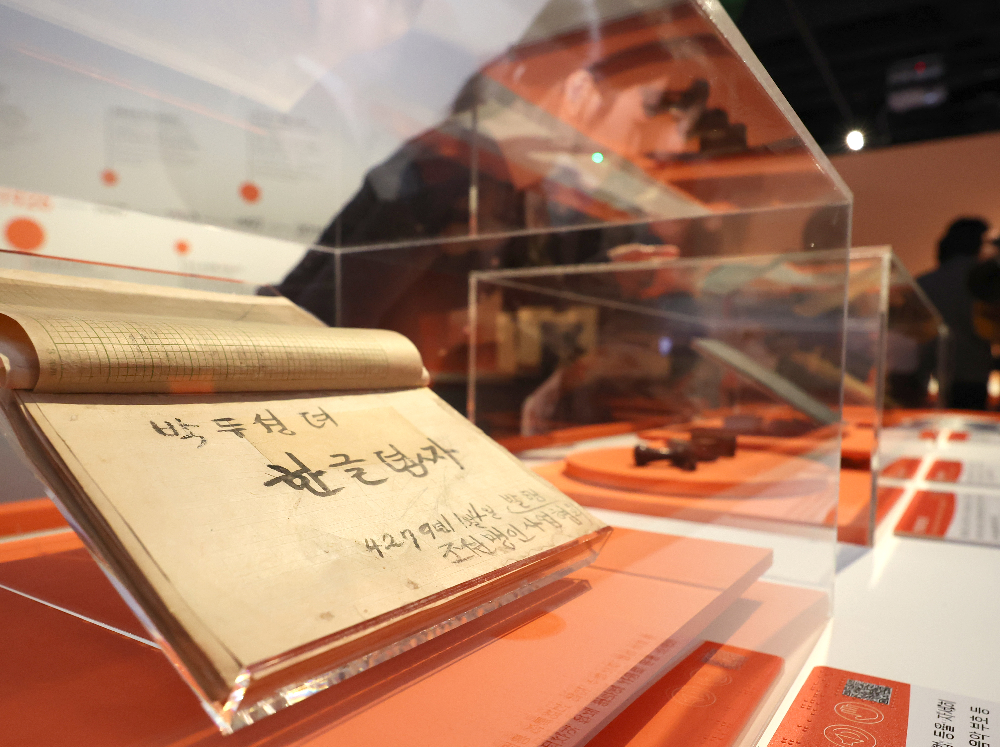
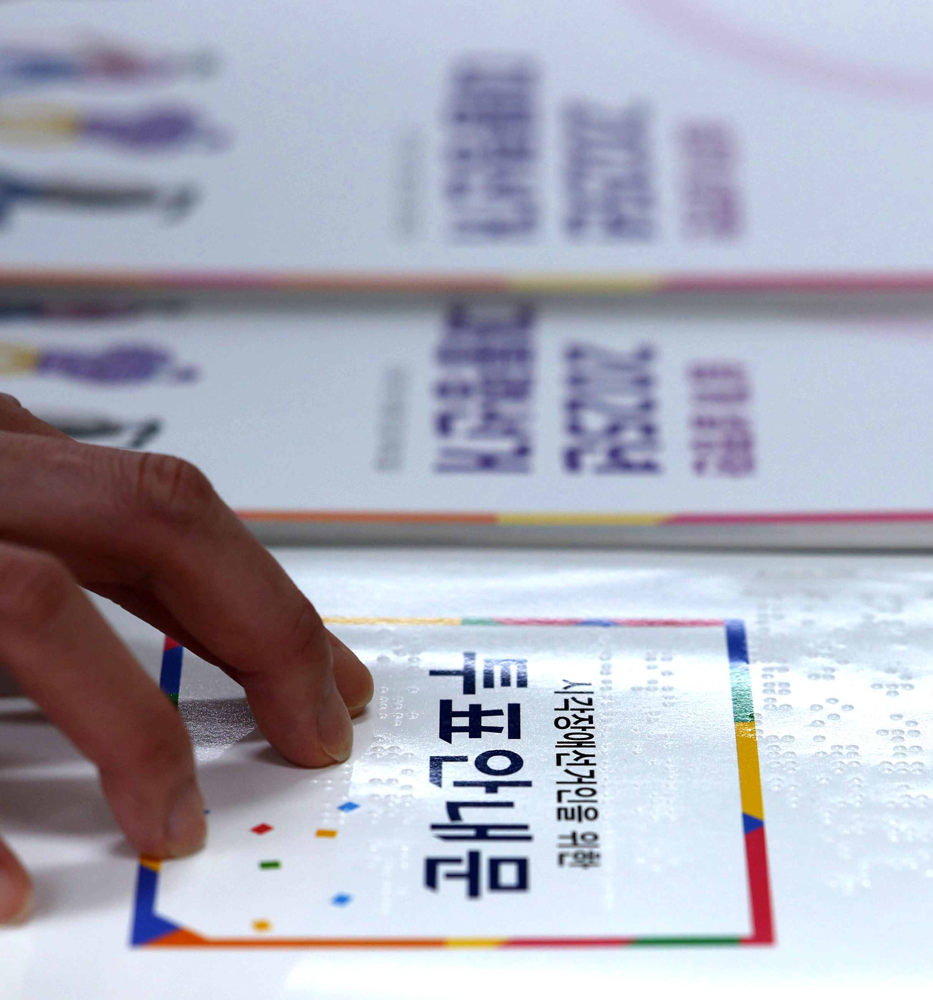
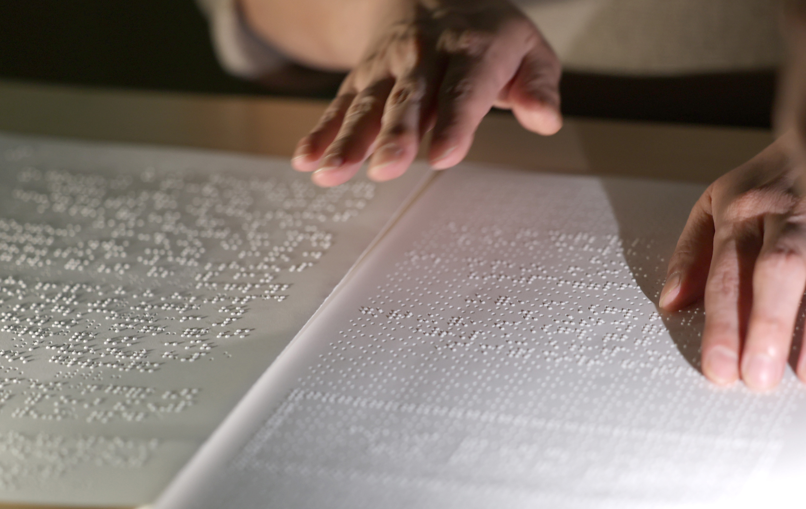

점점, 문장이 손에 잡혔다 [훈맹정음 100년]
11월 4일 한글 점자의 날…송암 박두성 선생의 당부
책과 투표안내문, 악보에 쓰이는 한글 점자
2025년 11월 3일 경기 수원시 영통구 장애인종합복지관 사랑샘도서관에서 관계자가 점자책을 읽고 있다. (사진=뉴시스)
[서울=뉴시스] 안재현 기자 = 2026년 11월 4일은 송암 박두성 선생이 한글 점자 ‘훈맹정음’을 발표한 지 100년이 되는 날이다. 매년 이날은 ‘한글 점자의 날’로 기념한다. 손끝으로 읽는 문자는 오늘도 교실의 시험지와 도서관의 책, 투표안내문과 악보에 쓰이고 있다.
점자는 볼록하게 솟은 점을 손끝으로 읽는 문자다. 기본적인 한 칸은 세로 세 자리와 가로 두 자리로 이뤄지며, 점의 개수와 위치를 조합해 글자와 기호를 나타낸다. 한글뿐 아니라 수학과 과학, 음악을 기록하는 데도 쓰인다.
인천 연수구 국립세계문자박물관에서는 100주년 특별전 ‘점에서 세상으로: 훈맹정음 100주년’이 열리고 있다. 전시 기간은 2026년 10월 7일부터 2027년 2월 14일까지다.

2026년 10월 6일 인천 연수구 국립세계문자박물관 특별전 ‘점에서 세상으로: 훈맹정음 100주년’에 한글 점자 설명서 등이 전시돼 있다. (사진=뉴시스)
훈맹정음 이전에도 한글 점자가 있었다. 로제타 셔우드 홀이 뉴욕 포인트 점자를 바탕으로 만든 ‘평양 점자’다. 국립국어원은 평양 점자가 훈맹정음 이전까지 약 28년 동안 쓰였다면서, 초성과 종성을 구별하지 않는 등 한계가 있었다고 설명한다.
국립국어원의 점자 소개 자료에 따르면, 일제강점기 제생원에서는 일본 점자로 학생들을 가르쳤다. 제생원 맹아부 교사였던 박두성 선생은 일본 점자만 가르쳐야 하는 현실에 문제를 느껴 1920년 한글 점자 연구에 나섰다. 1923년에는 제자들과 비밀리에 조선어점자연구위원회를 조직했다. 연구 끝에 1926년 11월 4일 훈맹정음을 발표했다.
“점자책…. 쌓지 말고 꽂아….”
인천시 ‘굿모닝인천’은 2025년 11월호에서 박두성 선생이 임종 무렵 남긴 말로 이 당부를 전했다. 점자의 돌출부가 눌려 납작해질 것을 우려한 말이라고 기사는 설명한다.
실로암시각장애인음악재활센터는 점자악보를 점역·교정·검수 단계로 제작한다고 안내한다. 음악을 전공한 점역사가 악보를 분석해 옮기고, 시각장애인 음악 교정사가 점자 규정에 맞는지 살핀다. 점역사와 교정사가 함께 오류를 고친 뒤 최종 점검을 거친다.
선거 정보도 점자로 제공된다.

2025년 5월 19일 경기 과천 중앙선거관리위원회 선거종합상황실에서 직원이 시각장애 선거인을 위한 투표안내문의 점자를 확인하고 있다. (사진=뉴시스)
읽기를 배우는 교육과 학습 자료 지원도 이어지고 있다. 하상장애인복지관은 중도 시각장애인과 통합교육 시각장애 학생에게 한글 점자 읽기를 가르친다. 학교 수업의 그래프·도형과 교내 시험 문제를 점자로 제작하고, 수능을 준비하는 시각장애 학생을 위해 전국연합학력평가 문제를 점자형과 음성형으로 제공한다.
교과서를 제때 보급하기 위한 제도도 바뀌었다. 교육부는 2026년 10월 20일 ‘교과용 도서에 관한 규정’ 개정령안이 국무회의에서 의결됐다고 밝혔다. 시각장애인용 교과서를 학기 전에 제작·보급할 수 있도록, 발행·제작자가 점자나 디지털 음성으로 변환하기 쉬운 파일을 제출하는 형식과 절차를 구체화했다.
다만 시각장애인 모두가 점자를 읽는 것은 아니다. 국립국어원이 2025년 20~69세 시각장애인 500명을 대상으로 한 조사에서, 해당 문항에 응답한 499명 중 14.4%가 스스로 점자를 읽고 쓸 수 있다고 답했다.
같은 조사에서 점자 발전에 필요한 일을 묻는 복수응답 문항에는 492명이 답했다. 이 가운데 74%가 ‘점자 교원 양성 및 점자 교육 활성화’를 골랐다.

2025년 11월 3일 인천 미추홀구 송암점자도서관에서 한 시각장애인이 점자책을 읽고 있다. (사진=뉴시스)기획·디렉터 = 안재현 기자
사진 김종택·전진환·조수정 기자